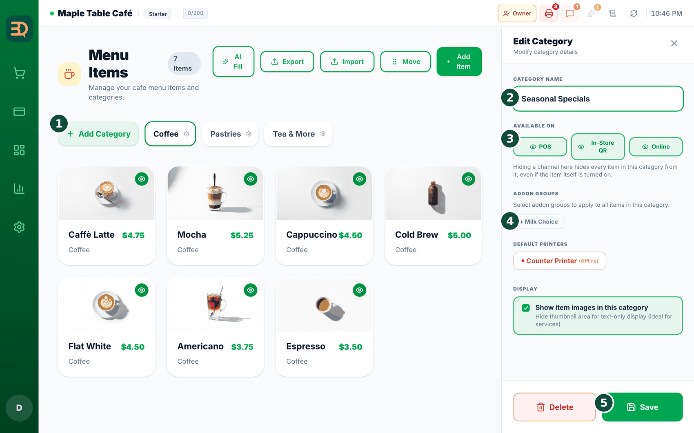
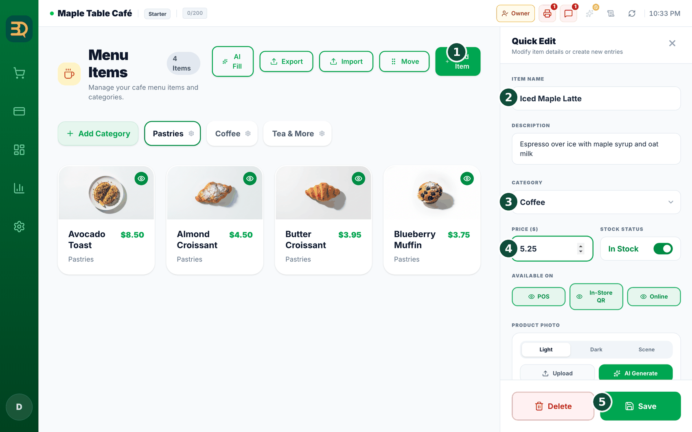
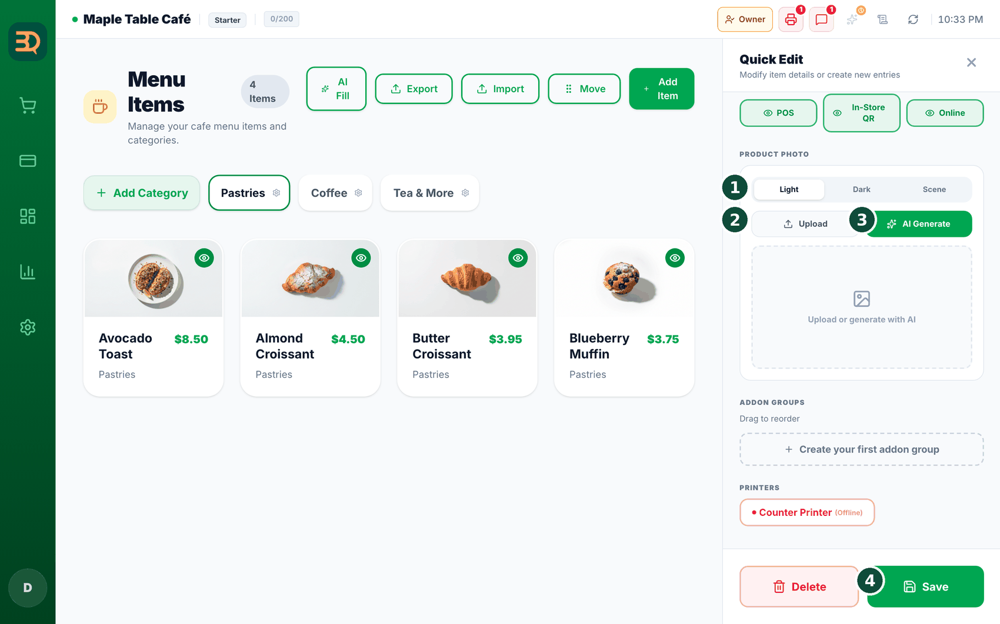
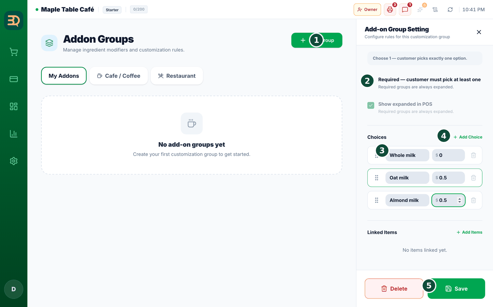
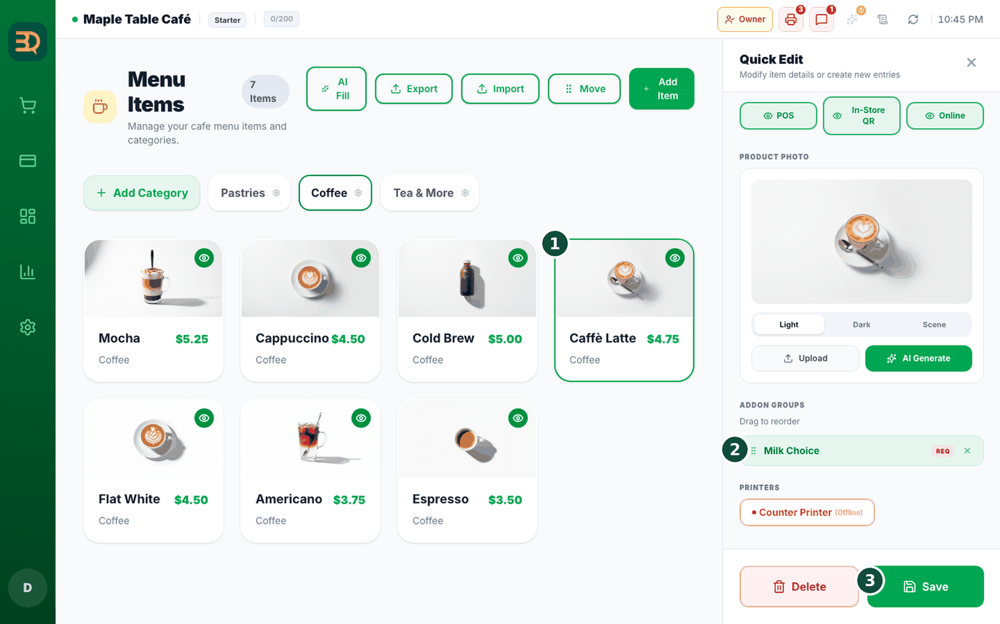
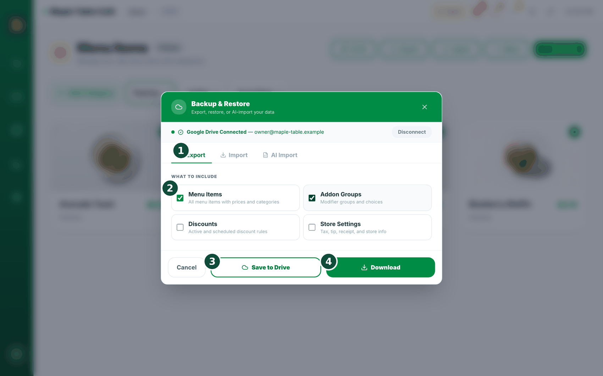
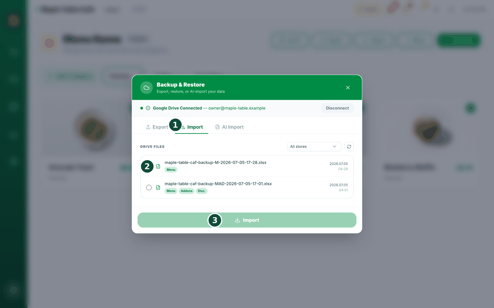
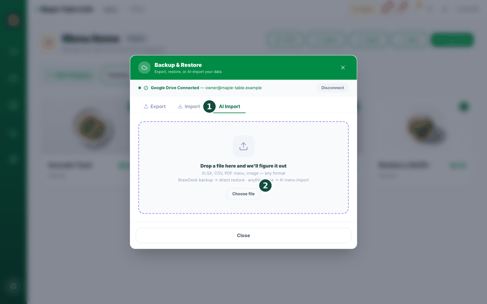
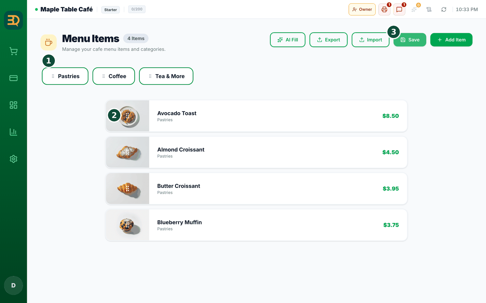

4创建菜单
菜单就是您所售商品的清单，它会铺满点单界面。下面来添加商品，并把它们分到各个分组中。
分类与商品

- 点击左侧边栏的 Manage（管理）› Menu Items（菜单项目）。右上角有 AI Fill（AI 填充）、Export（导出）、Import（导入）、“Move” 和 Add Item（添加商品）按钮；Add Category（添加分类）位于分类标签行的最左侧。

- 请先创建分类。点击 Add Category，输入“咖啡”之类的名称并保存。（至少要有一个分类，Add Item 才能使用。）

- 点击 Add Item，侧边会打开一个面板。请填写：Item Name（商品名称）、Description（描述，可选）、Category（分类）、Price（价格）和 Stock Status（库存状态，即 “In Stock” 开关）。

- 添加照片。点击 Upload（上传）使用您自己的图片，或点击 AI Generate（AI 生成）自动生成一张。
- 点击 Save（保存），商品就会出现在对应的分类中。
什么是分类？分类就是一个分组，像文件夹一样。它让菜单井井有条，方便查找商品。
选项组与预设


- 想让顾客有更多选择？请在商品面板中关联选项组（如牛奶或杯型）。您可以用 Add Group 创建选项组，选择类型（Single 单选 / Multi 多选 / Quantity 数量），并添加带价格的选项。
现成的选项组。不想从零创建选项组？在商品面板中点击 Add from Presets 打开 Preset Library（预设库），里面有适合咖啡馆的 Milk（牛奶）、Size（杯型）、Temperature（温度）和 Sweetness（甜度），以及适合餐厅的 Spice（辣度）、Protein（蛋白质）和 Sides（配菜）等现成选项组。点击一张卡片即可将整个选项组加入您的菜单，加入后会显示 Added 标记。
AI 照片与 AI Fill

- 想要更好看的照片？在商品面板中选择背景风格（Light / Dark / Scene），然后点击 AI Generate。系统会生成 3 张照片，点击您喜欢的那张即可。
用 “AI Fill” 一次处理整个菜单。点击 AI Fill，选择处理哪些商品（All items 全部商品 / Missing image only 仅缺图商品 / Specific category 指定分类），选择生成内容（Image + Description 图片+描述 / Image only 仅图片 / Description only 仅描述），选择背景风格（Light — Pure white studio 纯白影棚 / Dark — Dark charcoal 深炭灰 / Scene — Café bokeh 咖啡馆虚化背景），然后点击 Generate for N items（为 N 个商品生成）。查看结果后点击 Apply（应用）。
值得展示
AI 可以为您写出整份菜单，甚至生成商品照片。让您几秒钟内就拥有一份完整的菜单，而不是面对一片空白。
导入与导出



- 已经有电子表格形式的菜单？点击 Import（导入）即可一次性全部导入。点击 Export（导出）可将菜单下载为电子表格。
